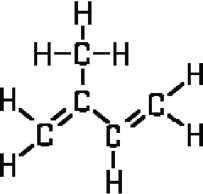
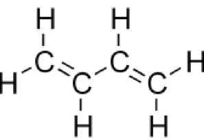
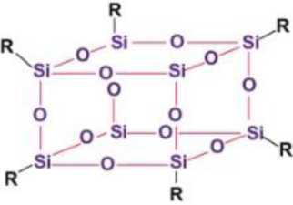
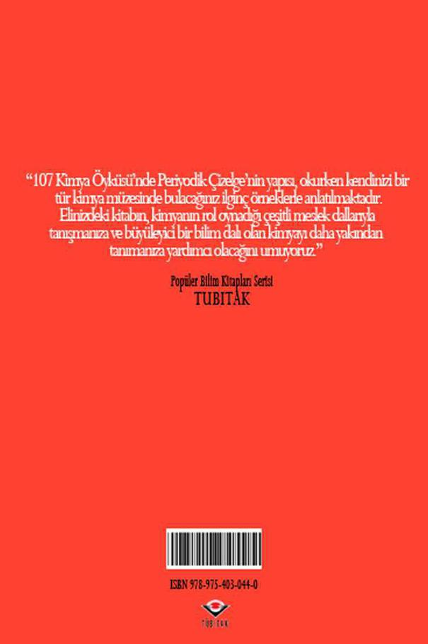

V. KİMYA YAYILIYOR
92. BİR KEZ DAHA ELMAS
İşlenmemiş ham elmas "tüm minerallerin, tüm malzemelerin vs." sertlik şampiyonudur. Modern mühendislik için yaşam elmassız çok zor olurdu.
Yontulmuş ve parlatılmış elmas, değerli taşlar arasında eşi olmayan bir parlaklığa sahiptir. Grimsi-mavi elmaslar mücevherciler için özellikle değerlidir. Onlar "bir kez mavi ayda" oluştukları için fiyatları ulaşılmazdır.
Ancak sonuçta, mücevher olarak elmas pek önemli değildir. Ama, eğer sıradan elmas daha çok olsaydı, her küçük kristal parçası için bu denli endişelenmemiz gerekmezdi.
Ne yazık ki, yeryüzünde çok az sayıda elmas yatağı var; zengin yataklar daha da az. Bunlardan biri Güney Afrika'da olup, Rusya dışında dünya elmas üretiminin yüzde doksanından fazlasını sağlamaktadır. Bu ülkede, yaklaşık on yıl önce Yakutya'da çok büyük bir elmas yatağı bulunmuş ve endüstriyel ölçekte üretime geçilmiştir.
Doğal elmasın oluşumu için olağanüstü koşullar, yani sınırsız sıcaklık ve basınç gerekir. Elmas yerkabuğunun derinliklerinde doğar. Erimiş elmas içeren kısımlar yüzeye fışkırıp donabilir; ancak bu olay çok nadiren olur.
Peki, bunu doğanın yardımı olmadan biz başaramaz mıyız?
İnsanın kendisi elmas yapamaz mı?
Bilim tarihinde, yapay elmas üretmeyi amaçlayan sayısız girişime rastlanır (Yeri gelmişken söyleyelim, ilk "şans arayanlardan" biri floru ilk kez serbest halde yalıtan Henri Moissan'dı). Hepsi de başarısızlıkla sonuçlandı. Ya yöntem temelden yanlıştı ya da deneycilerin fazlasıyla yüksek sıcaklık ve basınca dayanabilecek düzenekleri bulunmuyordu.
Yapay elmas üretme probleminin anahtarı ancak bu yüzyılda ellili yılların ortalarında modern mühendislik tarafından bulundu. Tahmin edilebileceği gibi, başlangıç maddesi grafitti. Grafit aynı anda yüzbin atmosfer basınç ve üçbin derece sıcaklık altında tutuluyordu. Elmas, artık dünyanın birçok ülkesinde üretilmektedir.
Ancak kimyacılar bu olaya sıradan kişiler kadar sevinebildi. Çünkü başarı fizikçilere aitti, kimyacıların rolü önemsizdi.
Bununla birlikte kimyacılar, mükemmel elmasın elde edilmesine yardım ederek puan kazandılar.
Mükemmel elmas mı?
Elmastan daha mükemmeli olabilir mi?
Onun kristal yapısı, kristal dünyasındaki en mükemmel örnektir.
Elmas kristallerinde karbon atomları onları böylesine sert yapan ideal bir geometrik düzen içindedirler.
Elmas daha sert hale getirilemez, ama elmastan daha sert bir madde yapılabilir.
Kimyacılar böyle bir maddeyi üretmek için, bir başlangıç maddesi yaratmışlardır.
Boron ve azottan oluşan boron nitrit adlı bir kimyasal bileşik vardır.
Görünüşü aleladedir, ancak dikkati çeken grafitinkiyle aynı olan kristal yapısıdır.
Boron nitritin uzun süredir "beyaz grafit" olarak bilinmesinin nedeni budur. Doğru, çünkü kimse boron nitritten kurşun kalem yapmaya kalkışmaz!
Kimyacılar boron nitriti sentezlemek üzere ucuz bir yol buldular.
Fizikçiler de onu yüzbinlerce atmosfer basınç ve binlerce derece sıcaklıkta zorlu testlere soktular.
İzledikleri mantık çok basitti.
"Siyah" grafit elmasa dönüşebildiğine göre, onun "beyaz" renkli karşılığından neden elmasa benzer bir madde elde edilmesindi?
Sonuçta, sertlikte elması geçen bir madde olan borazon elde edildi.
Borazon elmasın yüzeyini çizer ve daha yüksek sıcaklıklara dayanabilir.
Borazonu yakmak da kolay değildir.
Borazon hâlâ çok pahalıdır.
Fiyatını düşürmek için daha fazla bir çaba gereklidir.
Ancak en önemli kısmı halledilmiştir. İnsanoğlu doğadan daha yetenekli olduğunu yine kanıtlamıştır. Kısa süre önce Japon bilim adamlarının elmastan çok daha sert bir madde hazırlamayı başardıkları açıklandı. Magnezyum silikatı (magnezyum, silisyum ve oksijenden oluşan bir bileşik), santimetre kareye 150 tonluk bir basınç altında tutmuşlardı. Kolayca anlaşılabilecek nedenlerle sentezin ayrıntıları açıklanmamıştı. Yeni doğan "sertlik krah"nm henüz adı yoktur. Ama bu önemli değil. Önemli olan, en sert maddeler sıralamasında yüzyıllardır tartışmasız liste başı olan elmasın yakın gelecekte alt sıralara düşecek olmasıdır.
93. SONSUZ MOLEKÜLLER
Lastiğin ne olduğunu herkes bilir.
O, top ve çizmedir.
O, hokey sopası ve cerrah eldivenidir.
O, otomobil lastiği ve sıcak su torbası, su geçirmez yağmurluk ve hortumdur.
Lastik ve lastik ürünleri bugün yüzlerce fabrikada üretiliyor.
Yıllarca önce lastik ürünler, kauçuk denen doğal lastikten yapılırdı. Kauçuk sözcüğü, Tupi dilinde "Hevea'nın gözyaşları" anlamına gelen "caou uchu" dan türetilmiştir.
Tupi, Amazon vadisinde yaşayan bir Güney Amerika Kızılderili kabilesinin konuştuğu dildir.
Hevea, özsuyu lastik yapmak için kullanılan en önemli ağaçlardan biridir. Lastikten pek çok yararlı şey yapılabilir. Üretiminin çok fazla iş gücü gerektirmesi ve Hevea ağacının sadece tropikal bölgelerde yetişmesi çok kötüdür. Bu nedenlerle, doğal hammaddenin endüstrinin ihtiyacını karşılaması imkansızdı.
Burada yine kimya imdadımıza yetişti. Kimyacılar önce lastiğin neden çok esnek olduğu sorusuna cevap bulmaya çalıştılar. "Hevea'nın gözyaşları"nı uzun süre inceleyip sonunda yanıtı buldular. Lastik moleküllerinin çok özel bir yapıya sahip olduğu anlaşıldı.
Moleküller benzer birimlerin tekrarlanmasıyla oluşan sonsuz zincirler şeklindedir. Yaklaşık onbeşbin birimden oluşan uzun bir molekül doğal olarak her yöne kıvrılır ve esnektir. Zinciri oluşturan birimlerin aşağıdaki yapısal formüle sahip izopren adlı hidrokarbon molekülleri olduğu bulunmuştur.

İzoprenin bir tür doğal başlangıç monomeri olduğunu söylemek daha doğrudur. Polimerizasyon sırasında, izopren molekülü hafif bir değişime uğrar: karbon atomları arasındaki çift bağ açılır ve serbest bağlar birimleri dev lastik molekülleri halinde birleştirir.
Yapay lastik üretme problemi, bilim adamlarının ve mühendislerin çok eskiden beri ilgisini çekiyordu.
İlk bakışta, iş çok karmaşık görünmüyordu. İzopren üretilmeli ve izopren birimleri uzun bükülebilir yapay lastik zincirleri haline dönüştürülmek üzere polimerize edilmeliydi.
Oysa gerçek, hayal kırıcıydı. Kimyacılar biraz zor da olsa izopreni sentezlemeyi başardılar ama polimerizasyon sonucu lastik oluşmadı. Birimler birbirine belirli bir düzen içinde değil gelişigüzel bağlandı. Elde edilen ürün lastiği biraz andırıyordu fakat pek çok bakımdan farklıydı.
Dolayısıyla, kimyacıların izopren birimlerini düz bir zincir boyunca birbirine bağlayan yöntemler bulmaları gerekiyordu.
Dünyanın ilk endüstriyel yapay lastiği Rusya'da üretildi.
Akademisyen S. Lebedev zincir oluşturacak birim olarak başka bir maddeyi, butadieni seçmişti:

Butadien, bileşim ve yapı bakımından izoprene çok benzer, fakat polimerizasyonunu kontrol etmek daha kolaydır.
Günümüzde çok sayıda yapay lastik biliniyor.
(Bunlara, doğal lastikten ayırt etmek için elastomer denmektedir).
Doğal lastik ve ürünlerinin önemli kusurları vardır. Örneğin, sıvı ve katı yağların içinde şişer, oksitleyicilere, özellikle izleri atmosferde her zaman var olan ozona karşı dayanıksızdırlar. Doğal lastikten yapılan maddeler vulkanize edilmeli, yani yüksek sıcaklıkta kükürtle işleme sokulmalıdır. Ham lastik bu şekilde sert lastik ya da ebonite dönüştürülür.
Doğal lastikten yapılan ürünler (örneğin, otomobil tekerlekleri) kullanım sırasında yaşlanmaya ve hızla eskimeye yol açan çok miktarda ısı yayar. Bilim adamlarının, daha iyi özellikler gösteren yeni yapay lastikler yaratmaları bu nedenle gerekiyordu. Örneğin, "Buna" diye bilinen bir lastik ailesi vardır. İsim, "butadien" ve "natrium"un (sodyumun Latincesi) ilk hecelerinden türetilmiştir. Bunun polimerizasyonunda katalizör rolünü sodyum oynar. Bu ailedeki bazı elastomerler mükemmel özelliklere sahip olup, araç lastiği üretiminde kullanılırlar.
Özellikle büyük öneme sahip olan, izobuten ile izoprenin ortak polimerizasyonu sonucu oluşan butil lastiğidir.
Öncelikle, butil lastiği en ucuz lastiktir. İkincisi, doğal lastiğin tersine ozondan etkilenmez. Ayrıca, araba tekerleği üretiminde geniş ölçüde kullanılan vulkanize butil lastiği hava geçirmezliği açısından, doğal lastikten yapılan vulkanize ürüne göre on kat iyidir.
Poliüretan lastikler özellikle ilginçtir. Gerilmeye karşı dirençleri fazladır ve hemen hemen hiç eskimezler. Poliüretan elastomerler, döşemecilikte lastik köpük yapımında kullanılır.
Son yıllarda, bilim adamlarının önceleri hayal bile edemeyeceği lastikler geliştirilmiştir. Bunlar esas olarak organosilisyum ve florokarbon bileşiklerinden türetilen elastomerlerdir. Bu elastomerlerin ısıl kararlılığı, doğal lastiğinkinin iki katıdır. Ozona dayanıklıdırlar ve florokarbon bileşikleri kökenli lastik, dumanlı sülfürik ve nitrik asitlere bile dayanır.
Ancak hepsi bu kadar değil. Butadien ve organik asitlerin ortak polimeri olan karboksilli lastikler yeni bulunan ürünlerdir. Gerilmeye karşı mukavemetleri çok yüksektir.
Açıktır ki, doğa bu alanda da üstünlüğünü, insan eliyle yapılmış maddelere kaptırmış bulunmaktadır.
94. DELİNMEZ BİR YÜREK VE GERGEDAN DERİSİ
Organik kimyada, hidrokarbonlar denen bir bileşik sınıfı vardır. Molekülleri hidrojen ve karbon atomlarından başka bir şey içermediğinden bu adla anılırlar. En iyi bilinen temsilcilerinden biri metan (doğal gazın yüzde 95'ini oluşturur) ve diğeri kendisinden çeşitli petrol ürünleri, motor yağı ve pek çok değerli ürün elde edilen petroldür.
En basit hidrokarbon olan metanı (CH4) ele alalım.
Metandaki hidrojen atomlarını oksijen atomlarıyla değiştirirsek ne elde ederiz?
Karbon dioksid (CO2). Ya kükürt atomlarıyla değiştirirsek?
Karbon disülfid (CS2) denilen uçucu, zehirli bir sıvı.
Eğer tüm hidrojen atomlarını klor atomlarıyla değiştirirsek, yine çok tanınan bir madde olan karbon tetraklorürü elde ederiz.
Peki, klor yerine flor kullanırsak?
Yaklaşık otuz yıl önce, bu soruya kimse doğru dürüst yanıt veremezdi. Oysa zamanımızda florokarbon bileşikleri kimyası, kimyanın bağımsız bir dalı haline gelmiştir.
Florokarbonların fiziksel özellikleri, hemen tümüyle hidrokarbonlarınkine benzer. Ama bu ancak genel özellikleri söz konusu olduğunda geçerlidir. Hidrokarbonların tersine, florokarbonlar reaktif değildirler. Ayrıca, ısıya çok iyi direnç gösterirler. Bazen "delinmez yürekli" ve "gergedan derili" maddeler denmesinin nedeni de budur.
Hidrokarbonlara (ve başka sınıftan organik bileşiklere) göre kararlı olmalarının kimyasal açıklaması basittir. Flor atomları hidrojen atomlarından daha büyüktür ve bu yüzden çevresini sardıkları karbon atomlarının diğer reaktif atomlara ulaşmasını engellerler.
Öte yandan, iyonlara dönüşen flor atomları elektronlarını vermekte isteksiz davranır ve başka atomlarla tepkimeye girmekten "hoşlanmaz'lar.
Bildiğimiz gibi flor, en aktif ametal maddedir ve iyonunu oksitleyebilecek (yani, ondan bir elektron uzaklaştıracak) başka bir ametal yoktur. Ayrıca, karbon-karbon bağının kendisi çok kararlıdır (elması hatırlayın). Tepkimeye girme isteksizlikleri nedeniyle florokarbonlar, geniş uygulama alanı bulmuşlardır.
Örneğin Teflon denen florokarbon reçineleri 300°C'a kadar ısıtılmaya dayanır; sülfürik, nitrik, hidroklorik ve diğer asitlerden etkilenmezler. Kaynar alkalilere direnç gösterir, bilinen organik ve anorganik çözücülerin hiç birinde çözünmezler.
Floroplastiklerin bazen "organik platin" diye adlandırılmaları sebepsiz değildir!
Floroplastikler kimya laboratuvar eşyası, endüstriyel kimyasal aygıt ve çok amaçlı boru yapımında kullanılan mükemmel malzemelerdir.
O kadar pahalı olmasaydı, inanın dünyadaki birçok şey platinden yapılırdı ama floroplastikler platine göre daha ucuzdur.
Floroplastik, dünyadaki en kaygan maddedir. Masanın üzerine atılan bir floroplastik filmi, kelimenin tam anlamıyla yüzeyde "akıp gider". Floroplastikten yapılan millerin yağlanması gerekmez.
Son olarak, floroplastikler mükemmel yalıtkan ve ısıya dayanıklı maddelerdir. Floroplastik yalıtım 400°C'a kadar ısıya dayanabilir. Bu sıcaklık, kurşunun erime noktasının üzerindedir!
İnsan yapımı en dikkat çekici maddelerden biri olan floroplastiklerin özellikleri işte bunlar. Sıvı florokarbonlar yanmaz ve çok düşük sıcaklıklarda donar. Mantar ve böceklerden etkilenmez, paslanmaya karşı çok dayanıklıdır.
95. KARBON VE SİLİSYUMUN BERABERLİĞİ
Doğada, özel bir konuma sahip olduğu öne sürülebilecek iki element vardır. Birincisi karbondur. Karbon bütün canlıların temelidir. Yukarıdaki sav karbon atomları zincir bileşikler oluşturmak üzere birbirlerine kuvvetle bağlanabildiği için geçerlidir.
İkincisi silisyumdur. Silisyum tüm anorganik doğanın temelidir. Fakat silisyum atomları karbon atomları gibi uzun zincirler oluşturamaz ve doğadaki silisyum bileşiklerinin sayısı, herhangi bir kimyasal elementin bileşiklerinden çok fazlaysa da karbon bileşiklerinin sayısından azdır.
Bilim adamları, silisyumun bu kusurunu "düzeltmeye" karar verdiler. Aslında silisyum tıpkı karbon gibi dört değerlidir. Doğru, karbon atomları arasındaki bağ silisyum atomları arasındaki bağdan çok daha kuvvetlidir, fakat silisyum daha az aktif oluşuyla bunu telafi eder.
Eğer biz karbon yerine silisyum içeren organik bileşiklere benzer bileşikler elde edebilseydik, kimbilir ne harika özelliklere sahip olurlardı!
Bilim adamları başlangıçta şanssızdılar. Silisyum atomlarının oksijen atomlarıyla dönüşümlü bir bileşik oluşturabileceğini kanıtladılar, ama bu bileşik kararlı değildi.
Silisyum atomlarını karbon atomlarıyla birleştirmeye karar verdiklerinde, ilk başarıyı elde ettiler. Günümüzde organosilisyum bileşikleri ya da silikonlar diye bilinen bu bileşikler, eşsiz özelliklere sahiptir. Silikondan çeşitli reçineler yapılmış ve bunlardan, yüksek sıcaklığa uzun süre direnç gösterebilen plastikler elde edilmiştir.

Organosilisyum polimerlerinden türetilen elastomerler çok değerli özelliklere sahiptir. Bu özelliklerden biri ısıl dirençtir. Bazı silikon lastikleri 350°C'ın üzerinde bile bozulmazlar. Böyle bir lastikten yapılmış tekerlek kaplamasını düşününüz.
Silikon lastikleri organik çözücülerin hiç birinde şişmez. Günümüzde, yakıt nakil hatları için çeşitli türde hortumların yapımında kullanılırlar.
Bazı silikon sıvılarının ve reçinelerinin akışkanlıkları, geniş bir sıcaklık aralığında çok az değişir. Bu özellikleri nedeniyle yağlayıcı olarak seçilirler. Silikon sıvıları, uçuculukları düşük ve kaynama noktaları yüksek olduğundan güçlü vakum pompalarında kullanılır.
Organosilisyum bileşikleri suyu sevmez ve su geçirmez kumaş üretiminde bu değerli özelliklerinden yararlanılır. Hepsi bu kadar değil. Suyun taşı aşındırdığı söylenir. Önemli konstrüksiyon projelerinde yapılan testler, yapı malzemelerine çeşitli organosilisyum sıvıları emdirmenin yararlı olduğunu göstermiştir.
Son yıllarda, ısıya çok dayanıklı olan silikon türevi emayeler geliştirilmiştir. Bu tür emayelerle kaplı bakır veya demir levhalar, 800°C sıcaklıkta ısıtmaya saatlerce dayanabilir.
Bu, karbon ve silisyum beraberliğinin sadece başlangıcıdır.
Bu "ikili" birlik artık kimyacıları tatmin etmiyor.
Kimyacılar organosilisyum bileşiklerinin moleküllerine alüminyum, titanyum veya bor gibi elementleri katmayı görev edindiler.
Problem yine başarıyla çözüldü ve poliorganometalsiloksanlar diye bilinen yeni bir madde türü elde edildi.
Bu polimerlerin zincirleri farklı türde halkalardan oluşabilir: Silisyum-oksijen-alüminyum, silisyum-oksijen-titanyum, silisyum-oksijen-bor vs.
Bu maddeler çoğu metal ve alaşımla bu konuda rekabet ederek, 500-600°C gibi sıcaklıklarda erirler. Japon bilim adamlarının 2000°C'a kadar ısınmaya direnç gösteren bir polimerik madde yaptıklarına ilişkin ilginç bir haber de ortaya atıldı.
Bu hata da olabilirdi, ama gerçeklerden o kadar da uzak değildi.
"Isıya dayanıklı polimerler" terimi, çok geçmeden günümüz mühendislik malzemelerinin uzun listesinde yerini alacaktır.
96. HARİKA ELEKLER
Bu elekler, eşsiz bir yapıya sahiptir.
Bazı ilginç özellikleri olan kocaman organik moleküllerdir.
İlk olarak, tıpkı diğer plastikler gibi suda ve organik çözücülerde çözünmezler, ikincisi, iyonojenik gruplar denen ve bir çözücü içinde (özellikle suda) farklı türde iyonlar oluşturabilen gruplardan oluşur.
Dolayısıyla bu bileşikler, elektrolit olarak sınıflandırılabilir.
İçerdikleri hidrojen iyonu, iyon değişimi diye bilinen bir işlemle bazı metal iyonlarıyla yer değiştirebilir. Bu bakımdan bu eşsiz bileşikler iyon değiştiriciler diye tanınırlar. Katyonlarla (pozitif yüklü iyonlar) etkileşime girme yeteneğinde olanlara katyon değiştirici, negatif yüklü iyonlarla etkileşime girenlere ise anyon değiştirici denir.
İlk organik iyon değiştiriciler yüzyılımızın otuzlu yıllarının ortalarında sentezlendi ve hemen geniş bir kullanım alanı buldu.
Buna şaşmamak gerek, çünkü iyon değiştiricilerin yardımıyla sert sudan yumuşak su, tuzlu sudan tatlı su elde edilebilir.
Biri katyon değiştirici, diğeri anyon değiştirici ile dolu iki kolon düşünelim.
Adi tuz içeren suyu saflaştırmak istediğimizi varsayalım.
Suyu önce katyon değiştiriciden geçiririz.
İçindeki tüm sodyum iyonları hidrojen iyonlarıyla yer değiştirir, öyle ki suyumuz artık sodyum klorür yerine hidroklorik asit içermektedir.
Sonra suyu anyon değiştiriciden geçiririz.
Eğer anyon değiştirici hidroksil biçimindeyse (yani, içindeki yer değiştirici anyonlar hidroksil iyonlarıysa), çözeltideki tüm klorür iyonları hidroksil iyonlarıyla yer değiştirir ve hidroksil iyonları serbest hidrojen iyonları ile derhal su molekülleri oluşturur.
Başlangıçta sodyum klorür içeren su, iyon değiştirici kolonlardan geçirilerek minerallerinden tümüyle arındırılabilir.
Ürün, en iyi kalite saf sudan hiç de geri kalmaz.
İyon değiştiricilerin çok tanınmalarının nedeni yalnızca suyu minerallerinden arındırma özellikleri değildir.
İyon değiştiricilerin farklı iyonları farklı güçte tuttukları bulunmuştur.
Lityum iyonları hidrojen iyonlarından, potasyum iyonları sodyumunkilerden, rubidyum iyonları potasyumunkilerden daha hızlı tutulur.
İyon değiştiriciler, metalleri ayırma konusunda da kolay bir çözüm sunmuşlardır.
Günümüzde iyon değiştiriciler endüstrinin çeşitli dallarında önemli bir rol oynar.
Örneğin, uzun bir süre, fotoğraf laboratuvarlarının atıklarındaki değerli gümüş metalini toplamak için uygun bir yöntem bulamamışlardı. Bu önemli problem, iyon değiştirici filtrelerin yardımıyla çözüldü.
Peki, insanoğlu iyon değiştiricileri deniz suyundaki değerli metalleri çıkartmak için kullanabilir mi? Yanıt evettir. Deniz suyu çok miktarda değişik tuzlar içerse de, ondaki soy metallerin çıkartılması yakın gelecekte gerçekleşecektir.
Şu anda güçlük, deniz suyu katyon değiştiriciden geçirildiğinde, içerdiği tuzların az miktardaki değerli metalin katyon değiştirici üzerinde tutulmasını engellemesidir. Sonuçta, elektron değiştirici reçine olarak bilinen yeni tip reçineler sentezlenmiştir. Bunlar yalnızca iyonlarını çözeltideki metal iyonlarıyla değiştirmekle kalmaz, metali elektron vererek indirgerler. Son testler gümüş içeren bir çözelti bu tür reçinelerden geçirildiğinde, reçine üzerinde gümüş iyonundan çok gümüş metali toplandığını ve gümüşün metalik halini epey uzun süre koruduğunu göstermiştir. Demek ki, bir tuz karışımı elektron değiştiriciden geçirilirse, indirgenen iyonlar saf metal atomlarına daha kolay dönüştürülebilir.
97. KİMYASAL KISKAÇLAR
Eski bir şakaya göre, çölde aslan yakalamaktan daha kolay bir şey yoktur. Çöl, kum ve aslanlardan ibaret olduğundan, tek yapmanız gereken bir elek alıp çölü elekten geçirmektir. Kum deliklerden geçecek, aslanlar eleğin üstünde kalacaktır.
Peki, değerli bir kimyasal element kullanım değeri olmayan çok miktarda başka elementlerle karışmış durumdaysa ne yapılmalıdır?
Ve ya bir maddenin içerdiği çok küçük miktardaki zararlı yabancı madde ayrıştırılmak zorundaysa?
Bu, ender rastlanan bir problem değildir.
Nükleer reaktörlerin yapımında kullanılacak zirkonyumun içerdiği hafniyum miktarı yüz binde biri geçmemelidir. Oysa onun normal zirkonyumdaki miktarı yaklaşık olarak binde ikidir.
Hafniyum ve zirkonyumun kimyasal özellikleri birbirine o kadar yakındır ki, sıradan yöntemler işe yaramaz.
Az önce sözünü ettiğimiz harika kimyasal elek bile etkisiz kalır.
Ama zirkonyum saf olmak zorundadır.
Kimyacılar yıllarca "benzer benzerde çözünür" gibi basit bir formülü uyguladılar.Anorganik maddeler anorganik çözücülerde ve organik maddeler organik çözücülerde kolayca çözünür. Birçok mineral asit tuzu suda, susuz florik asitte, sıvı hidrosiyanik (prusik) asitte iyi çözünür.
Pek çok organik madde benzen, aseton, kloroform, karbon disülfid ve diğer organik çözücülerde oldukça kolay çözünür.
Peki, organik ve anorganik bileşikler arasında yer alan bir madde nasıl davranacaktı?
Kimyacılar bu tür bileşikleri az çok tanıyorlardı.
Örneğin klorofil (yeşil yaprakların rengini veren madde), magnezyum atomları içeren organik bir bileşiktir. Organik çözücülerde iyi çözünür.
Öte yandan doğada bilinmeyen çok miktarda organometal bileşiği sentezlenmiştir.
Çözünürlükleri içerdikleri metale bağlı olmak üzere, bunların çoğu organik çözücülerde çözünür.
Kimyacılar bu avantajı kullanmaya karar verdiler.
Nükleer reaktörlerin çalışması sırasında, içerdikleri yabancı madde miktarı (uranyumun parçalanma ürünleri) çoğunlukla binde birden fazla olmadığı halde, kullanılmış uranyum çubuklarını zaman zaman değiştirmek gerekir. Çubuklar önce nitrik asitte çözülür. Uranyumun tamamı ve nükleer dönüşümler sonucu oluşan diğer metaller nitrat haline geçer. Ksenon ve iyot gibi bazı yabancı maddeler kendiliklerinden gaz ya da buhar halinde ortaya çıkar. Kalay gibi bazıları da bulamaç olarak kalır. Oluşan çözelti uranyum dışında hâlâ birçok yabancı madde, özellikle plütonyum, neptunyum, nadir toprak metalleri, teknetyum ve başka elementler içermektedir. Organik maddeler olaya tam burada karışır. Saf olmayan uranyumlu nitrik asit çözeltisi, tribütil fosfat denen bir organik maddenin çözeltisiyle karıştırılır. Yabancı maddeler nitrik asit çözeltisinde kalırken, pratik olarak uranyumun tamamı organik faza geçer.
Bu işleme özütleme denir, iki kez özütlendikten sonra, uranyum yabancı maddelerden hemen hemen tümüyle kurtulur ve tekrar uranyum çubuk yapımında kullanılır. Böylece özütlenen yabancı maddeler, en önemli olanlarını, özellikle plütonyum ve diğer bazı radyoaktif izotopları çıkarmak amacıyla ayrıştırılır. Zirkonyum ve hafniyum da benzer bir yolla ayrılabilir.
Özütleme işlemi şimdi mühendislikte geniş ölçüde kullanılıyor. Yalnız anorganik bileşiklerin değil özellikle vitamin, yağ ve alkaloid gibi organik bileşiklerin saflaştınlmasında da özütlemeden yararlanılıyor.
98. BEYAZ GÖMLEKLİ KİMYA
Kendisinin, Johann Bombastus Theophrastus Paracelsus von Hohenheim gibi debdebeli bir ismi vardı. Paracelsus soyadı değil, "Celsus'tan daha iyi" anlamına gelen bir lakaptı. Paracelsus mükemmel bir kimyacıydı ve hastalıkları iyileştiren bir büyücü olduğu söylenirdi. Çünkü o, yalnızca bir kimyacı değil, aynı zamanda bir hekimdi de. Ortaçağda kimya ve tıp güçlü bir birlik oluşturmaktaydı. Kimya henüz bir bilim olarak adlandırılma hakkını kazanmamıştı. Görünüşü çok belirsizdi ve gücünü meşhur "filozof taşı" için yapılan başarısız araştırmalarda tüketiyordu.
Ancak, kimyacılar mistisizmin ağlarında çırpmırken, tehlikeli hastalıkları iyileştirmeyi de öğrendiler. Böylece, iyatrokimya ya da tıp kimyası doğmuş oldu. Onaltı, onyedi ve onsekizinci yüzyıllarda çoğu kimyacıya eczacı denirdi; oysa şifa verici maddeleri hazırlarken yaptıkları iş kimyaydı. Aslında onları rastgele yöntemlerle hazırlıyorlardı ve "ilaçları" hastaya her zaman iyi gelmiyordu. Paracelsus en ünlü "eczacılar" dan biriydi. İlaç listesinde civalı ve kükürtlü merhemler (günümüzde deri hastalıklarının tedavisinde kullanılır), demir ve antimon tuzları, çeşitli bitki özsulan vardı. Başlangıçta kimya, hekimlere yalnızca doğada bulunan maddeleri sağlayabiliyordu ve çeşitler çok sınırlıydı.
Ama tıp bu kadarla yetinemezdi.
Modern bir reçete el kitabına bakarsak, ilaçların sadece yüzde 25'inin doğal dediğimiz maddelerden hazırlandığını görürüz. Onlar, çeşitli bitkilerden hazırlanmış özütler, esanslar ve şuruplardır. Tüm ötekiler doğada bilinmeyen, kimyanın yardımıyla oluşturulan sentetik ilaçlardır. Blk sentetik ilaç yaklaşık yüz yıl önce hazırlandı. Şahsilik asidin romatizmayı iyileştirici özelliği daha önceleri de biliniyordu. Fakat bitkisel hammaddelerden hazırlanması çok zor ve pahalıydı. Ancak 1874 yılında, fenolden salisilik asit hazırlamak için basit bir yöntem geliştirildi.
Bu asit günümüzde pek çok ilacın temelini oluşturur, en iyi bilinen örnek de aspirindir. Kural olarak bir ilacın "ömrü" oldukça kısadır: Eski ilaçların yerini yenileri, yani daha mükemmel ve çeşitli hastalıklara daha iyi uyarlananlan almaktadır. Aspirin bu konuda garip bir istisnadır. Her yıl yeni birtakım harika özellikleri bulunmaktadır. Artık aspirin yalnızca ateş düşürücü ve ağrı kesici bir ilaç olarak ele alınmamaktadır: Uygulama alanı çok daha geniştir.
Herkesin bildiği bir başka "eski" ilaç piramidondur (Doğum tarihi 1896).
Bugünlerde kimyacılar her gün, her türden hastalığı iyileştiren çok çeşitli özelliklere sahip yeni yeni ilaçlar sentezliyorlar. Bunlar ağrı kesicilerden ruhsal hastalıkları iyileştirenlere kadar değişik ilaçlardır. İnsanları iyileştirmek: Kimyacılar için bundan daha soylu, ama daha zor bir görev olamaz. Alman kimyacı Paul Ehrlich, uyku hastalığı olarak bilinen korkunç hastalığı iyileştirecek bir madde sentezlemek için yıllarca çalıştı.
Her sentezde birşey oluşuyor, ama Ehrlich sonuçtan memnun kalmıyordu. Ancak 606. denemesinde salvarsan adını verdiği ilacı elde etmeyi başardı ve onbinlerce insan yalnızca uyku hastalığından değil, bir başka sinsi hastalıktan, frengiden de kurtuldu. Ardından Ehrlich 914. denemesinde "yeni salvarsan" dediği daha güçlü bir ilaç elde etti.
Bir ilaç, cam balondan eczacı tezgahına gelinceye kadar uzun bir yol katetmek zorundadır. Bir ilaç tüm yönleriyle yeniden ve yeniden kontrol edilmedikçe kullanımı önerilemez diye bilinen bir hekim yasası vardır. Bu kurala uymamak korkunç kazalara neden olabilir. Yakın bir geçmişte bir Batı Alman ilaç firması thalidomid adlı yeni bir uyku ilacını piyasaya sürdü.
Beyaz bir tablet halindeki ilaç, sürekli uykusuzluk çekenler üzerinde bile çok etkili oldu. Thalidomid göklere çıkarıldı, fakat anne karnındaki bebeklerin korkunç bir düşmanı olduğu sonradan anlaşıldı. Onbinlerce sakat doğan çocuk: Bir ilacı dikkatle incelemeden satışa çıkarmanın ağır bedeli işte buydu.
Kimyacı ve hekimlerin yalnızca belli bir ilacın belli bir hastalığa iyi geldiğini bilmekle kalmayıp, onun nasıl etki ettiği ve hastalıkla mücadelesinin kimyasal mekanizması konusunda da fikir sahibi olmaları bu bakımdan önemlidir.
İşte küçük bir örnek. Barbitürik asit diye bilinen maddenin türevleri, günümüzde uyku ilacı olarak az sayılmayacak ölçüde kullanılır. Bu asit, karbon, hidrojen, azot ve oksijen atomlarından oluşan bir bileşiktir. Bileşiğin karbon atomlarından birine iki tane alkil grubu (hidrojen atomlarından birini kaybetmiş hidrokarbon molekülü) bağlıdır. Günümüzde kimyacılar, barbitürik asidin ancak alkil gruplarındaki karbon atomu sayısı dörtten az değilse uyutucu olduğunu ve karbon atomlarının sayısı ne kadar fazlaysa ilacın etkisinin de o kadar uzun süreli ve hızlı olacağını bulmuşlardır. Bilim adamları hastalıkların doğasını daha iyi anladıkça, kimyacıların yaptığı araştırmalar da o ölçüde mükemmelleşmektedir.
Önceleri görevi yalnızca çeşitli ilaçlar hazırlamak ve bu ilaçların çeşitli hastalıklarda kullanılmaları konusunda tavsiyede bulunmak olan farmakoloji, bugün giderek tam bir bilim haline gelmektedir.
Günümüzün farmakolojisti, thalidomid trajedilerinin asla tekrarlanmaması için hem kimyacı, hem biyolog, hem hekim ve hem de biyokimyacı olmalıdır.
İlaç sentezi, yeni bir doğanın yaratıcıları olan kimyacıların esas başarılarından biridir.
Kimyacılar, yüzyılın başlarında,yeni boyalar hazırlamak için büyük çabalar harcadılar. Kullandıkları başlangıç maddesi sulfanilik asitti. Molekülleri çok "esnek"ti, yani çok çeşitli şekillerde düzenlenebilme yeteneğine sahipti. Dolayısıyla kimyacılar, sulfanilik asidin belirli koşullarda değerli bir boyaya dönüşebileceği sonucuna vardılar. Nitekim öyle de oldu.
Fakat, sentetik sulfanilik boyaların aynı zamanda etkili ilaçlar olduğunu 1935'e kadar kimse anlamadı. O zaman, boya araştırmaları geriye itildi ve kimyacılar sulfonamidler genel adı altında toplanan yeni ilaçların peşine düştüler.
Çok bilenenlerden bazıları: Sulfapiridin, streptosid, sulfametiltiyazol ve sulfamezatin'dir. Sulfonamidler, en önemli kimyasal antibakteriyel bileşik gruplarından biridir.
Güney Amerika Yerlileri, kurar denilen öldürücü ok zehirini yapmak için, striknos toksifera adlı bir asma odunu kullanırlardı. Kurara batırılmış ok düşmana isabet ettiğinde ani ölüme yol açardı. Niçin? Kimyacılar bu soruyu yanıtlayabilmek için zehirin sırrını çözmeliydiler.
Kurarın asıl etkin maddesinin alkaloid tubokürarin olduğunu buldular. Organizmaya girdiğinde, kaslar kasılma yeteneklerini kaybedip hareketsiz hale geliyordu. Solunum imkansızlaşıyor ve bu sonuçta ölüme yol açıyordu. Ancak, söz konusu zehir bazı durumlarda yararlı olabilirdi. Çok karmaşık ameliyatlar sırasında cerrahlarca kullanılabilirdi. Örneğin, kalp ameliyatı sırasında organizma yapay solunuma bağlandığında, solunum kaslarını gevşetmek üzere kullanıldı. Öldürücü bir düşman, böylece arkadaş durumuna gelmişti. Tubokürarin klinik uygulamalara girmiş bulunuyordu.
Fakat tubokürarin hâlâ çok pahalıydı, daha ucuz ve yararlı bir bileşim bulmak gerekiyordu. Yine kimyacılar olaya karıştı.
Tubokürarin molekülü çeşitli yöntemlerle bölünüp, oluşan "parçalar" incelendi.
Kimyasal yapısı ile fizyolojik etkinliği arasındaki ilişki adım adım çözüldü. Etkisinin pozitif yüklü azot atomları içeren bazı gruplardan kaynaklandığı ve bu gruplar arasında belirli bir uzaklık olması gerektiği bulundu.
Artık, doğayı taklit etme ve aşma görevine başlanabilirdi. Önce tubokürarine yakın etkinlikte bir bileşim elde edildi, sonra bu bileşim geliştirildi. Sonuçta, tubokürarinden iki kat aktif olan sinkürin elde edildi. Başka bir parlak örnek, sıtma ile ilgilidir. Hastalığın ilacı doğal bir alkaloid olan kinindir. Ama kimyacılar kininden altmış kat etkin olan bir madde ürettiler.
Bu madde, plazmokin olarak da bilinen pamakindir. Günümüz tıbbının emrine amade sınırsız bir ilaç deposu vardır; başka bir deyişle, her durum ve bilinen hemen tüm hastalıklar için bir ilaç bulunur.
Sinir sistemini yatıştıran, en sinirli insanı bile sakinleştiren ilaçlar bulunmuştur. Korkuyu tümüyle yok eden bir ilaç da vardır. Kuşkusuz, bu sınav korkusu taşıyan bir öğrenci için yararsızdır. Öfkeyi bastıran ve yatıştırıcılar denen bir ilaç grubu bulunmaktadır. Bu gruptan olan reserpin bir süre ruh hastalıklarının (şizofreni) tedavisinde kullanılmıştır. Kemoterapi şimdi, akli bozuklukların tedavisinde kullanılan çok önemli bir yöntemdir.
Tıbbi kimyanın çabaları her zaman iyi ürünler vermez. Örneğin, LSD-25 adlı uğursuz bir ilaç (ona başka ad verilemez) vardır. LSD-25 pek çok kapitalist ülkede, yapay olarak şizofreni belirtileri ("hayatın zorluklarını" kısa süre için unutturan halüsinasyonlar) yaratan bir uyuşturucu olarak kullanılır. Ama LSD-25 tableti alıp normal durumuna dönemeyen insanlarla ilgili vakalar hiç de az değildir.
İstatistiklere göre, dünyada ölümlerin çoğu kalp kası enfarktüsü (kalp krizi) ya da beyin felcinden olmaktadır. Kimyacılar çeşitli kalp ilaçları ve beyin damarlarını genişletici ilaçlar bularak, bu hastalıklara karşı yapılan savaşa katkıda bulunuyorlar.
Hekimler, kimyacıların sentezlediği iki yeni ilaç olan tubazid ve para aminosalisilik asit (PASA) sayesinde veremi büyük ölçüde yenmişlerdir.
Son olarak, bilim adamları insan neslinin büyük düşmanı kansere çare bulmaya çalışıyorlar. Bu konuda hâlâ bir sürü belirsizlik var ve daha çok araştırma yapılacağa benzer.
Hekimler, kimyacıların yeni mucize yaratıcı ilaçlar bulmasını bekliyor. Boşuna beklemiyorlar: Kimyanın bu alanda da her konuda olduğu kadar güzel bir gösteri yapacağına kuşku yok.
99. KÜFTEN BİR MUCİZE
Bu kelime hekimler ve mikrobiyologlarca uzun süredir biliniyordu ve özel kitaplarda adı geçiyordu. Fakat, oldukça yakın tarihlere kadar, biyoloji veya tıpla ilgisi olmayan biri için hiçbir anlamı yoktu. Hatta, anlamını pek çok kimyacı da bilmiyordu.
Şimdi onu herkes tanıyor.
Bu kelime "antibiyotikler"dir.
Aslında, meslekten olmayan biri "antibiyotik" ten önce "mikrop" kelimesini öğrenir. Zatürre, menenjit, dizanteri, tifüs, verem ve birçok hastalığın mikroorganizmalardan kaynaklandığı anlaşılmıştır.
Antibiyotikler bu mikro organizmalarla savaşmak için gerekliydi.
Bazı tür küflerin iyileştirici etkisi olduğu Ortaçağda bile bilinirdi.
Aslında, Ortaçağ tıp düşüncesi oldukça garipti.
Örneğin, sadece bir suçtan ötürü asılmış olan adamların sandallarından alınan küflerin hastalığa iyi geleceğine inanılırdı.
Fakat bunun pek bir önemi yok.
Önemli olan, Dngiliz kimyacı Alexander Fleming'in incelediği bir tür küf mantarından aktif maddeyi yalıtmayı başarmasıdır. Elde edilen, ilk antibiyotik olan penisilindir. Penisilin streptokok, stafilokok, vb. gibi patolojik mikroorganizmalara karşı mücadelede mükemmel bir silah olmuştur. Penisilin, spiroketa pallida denen frengi mikrobunu bile yenmiştir.
Alexander Fleming penisilini 1928'de bulduğu halde, formülü ancak 1945'de belirlendi. 1947'de laboratuvarda yapay olarak üretildi. İnsan sonunda doğaya yetişmiş gibi görünüyordu. Ama bu tam da öyle değildi. Penisilinin laboratuvarda sentezi basit bir iş değildi; oysa küften elde edilmesi daha kolaydı.
Ama kimyacıların cesareti kırılmamıştı.
Bu nokta da sözlerinde durdular ve güzel bir gösteri sergilediler.
Mantardan penisilin eldesinin "verimi" çok düşüktü, onlar da verimi yükseltmeye karar verdiler.
Mikroorganizmanın kalıtımla görevli bölümüne bilgi verip niteliklerini değiştiren maddeler buldular. Dahası, bu yeni nitelikler kalıtsal hale getirildi; sonuçta da çok daha etkin olarak penisilin üreten yeni bir mantar nesli bulunmuş oldu.
Günümüzde çok fazla antibiyotik çeşidi vardır:
Streptomisin ve teramisin, tetrasiklin ve öromisin, biyomisin ve eritromisin.
Bugün yaklaşık bin farklı antibiyotik biliniyor ve yüz kadarı çeşitli hastalıkların tedavisinde kullanılıyor. Onların hazırlanmasında da kimya esas rolü oynuyor. Mikrobiyologlar mikroorganizma kolonileri içeren ve sıvı kültür ortamı olarak bilinen şeyi elde ettikten sonra, kimyacılar olayı ele aldılar.
"Etkin ana madde" leri yani antibiyotikleri ayırmak kimyacıların işidir. Karmaşık organik maddeleri doğal "hammaddeler"den ayırmak için çeşitli kimyasal yöntemler kullanılır. Antibiyotikler, özel emicilerle alınır. Araştırmacılar "kimyasal kıskaçlar" kullanırlar, yani antibiyotikleri çeşitli çözücüler aracılığıyla iyon değiştirici reçinelerle saflaştırıp çözeltiden çöktürerek ayırırlar.
Elde edilen ham antibiyotik, saf kristalli bir madde haline gelinceye kadar süren uzun saflaştırma işlemlerine sokulur.
Penisilin gibi bazı antibiyotikler hâlâ mikroorganizmaların yardımıyla sentezlenmektedir.
Fakat diğerlerinin üretimi yalnızca yarı yarıya doğaya bağlıdır.
Ancak kimyacıların doğanın hiç yardımı olmadan ürettikleri sintomisin gibi antibiyotikler de vardır. Böyle maddeler başlangıçtan son ürüne kadar kimyasal fabrikalarda sentezlenir.
Kimyanın güçlü yöntemleri olmasa ne "antibiyotik" sözcüğü bu kadar fazla tanınırdı, ne de tıpta antibiyotiklerin yol açtığı devrim gerçekleşirdi.
100. BİTKİ VİTAMİNLERİ: MİKROELEMENTLER
Element" kelimesinin pek çok anlamı vardır.
Örneğin, çekirdek yükü aynı olan bir türün atomları anlamına gelebilir.
Peki, "mikroelementler" nelerdir?
Bitki ve hayvan organizmasında çok küçük miktarlarda bulunan kimyasal elementlere bu adı veririz. İnsan organizması % 65 oksijen, yaklaşık % 18 karbon ve % 10 hidrojen içerir. Bunlar, büyük miktarda bulunduklarından makroelementlerdir. Oysa, her biri yüzde birin binde biri oranında bulunan titanyum ve alüminyum mikroelement olarak adlandırılır.
Biyokimyanın ilk günlerinde hiç kimse böyle önemsiz miktarlarla ilgilenmemişti. Yüzbinde bir aslında sözünü etmeye değmeyecek bir miktardı, zaten o tarihlerde bu kadar küçük miktarlar saptanamıyordu bile. Mühendislik ve analiz yöntemleri geliştikçe, bilim adamları canlı maddede daha başka elementler de buldular. Bununla birlikte, mikroelementlerin rolü uzun süre bilinmeden kaldı. Bugün bile herhangi bir örnekteki milyonda ve hatta yüz milyonda bir düzeyindeki yabancı madde kimyasal analizle saptanabildiği halde, çoğu mikroelementin bitki ve hayvanların yaşamsal etkinliklerindeki önemi henüz belirlenememiştir.
Ama bilinen bazı şeyler de vardır. Örneğin, bazı organizmaların kobalt, boron, bakır, manganez, vanadyum, iyot, flor, molibden, çinko hatta radyum gibi elementler içerdiği bilinmektedir. Evet, eser miktarda bile olsa radyum.
Yeri gelmişken söyleyelim, insan organizmasında şimdiye kadar yaklaşık 70 kimyasal element bulunmuştur ve insan vücudunun tüm Periyodik Sistem'i içerdiğine inanmanın belli bir dayanağı vardır. Üstelik her element belirli bir rol almaktadır. Hatta, çoğu hastalıkların organizmanın mikroelement denge dağılımının bozulmasından kaynaklandığına ilişkin bir görüş bile vardır. Demir ve manganez, bitki fotosentezinde önemli rol oynar. Bir bitki eser miktarda bile demir içermeyen toprakta büyütülürse, yapraklan ve sapı kağıt gibi beyaz olacaktır. Bu bitkiye bir demir tuzu çözeltisi püskürtülürse, doğal yeşil rengini hemen kazanır. Fotosentez için bakır da gereklidir; bakır azotun bitki organizması tarafından özümlenmesini etkiler. Bakır eksikliği, bir bileşenleri de azot olduğu için proteinlerin yeterince oluşmamasına neden olur.
Kompleks organik molibden bileşikleri, çeşitli enzimlerin bileşenidir. Azot özümlenmesini arttırırlar. Molibden yetersizliği, bitkinin molibdensiz özümleyemediği nitratların aşırı birikmesi yüzünden, yaprak hastalığına neden olur.
Molibden, bitkilerdeki fosfor içeriğini de etkiler. Molibden yoksa anorganik fosfatlar organik fosfatlara dönüşür. Molibden eksikliği bitkilerdeki pigment (renk maddesi) birikimini de etkiler; yapraklar lekeli ve mat bir hal alır.
Bitkiler, boron yoksa fosforu iyi özümleyemez. Boron, çeşitli şekerlerin bitki sistemi içerisinde daha iyi aktarımını sağlar.
Mikroelementler, hayvan organizmasında da önemli bir rol oynar. Hayvan yeminde hiç vanadyum bulunmamasının iştahsızlığa, hatta ölüme yol açabileceği saptanmıştır. Öte yandan, domuz yemindeki vanadyum miktarının arttırılması, hızlı büyümeye ve kalın bir yağ tabakası oluşumuna neden olur.
Çinko metabolizmada önemli bir rol oynar ve hayvan eritrositinin bir bileşenidir. Bir hayvan (veya insan) heyecanlanınca, karaciğer genel kan dolaşım sistemine manganez, silisyum, alüminyum, titanyum ve bakır salgılar. Fakat merkezi sinir sistemi engellenirse silisyum ve alüminyum oluşumu gecikir, kana yalnızca manganez, bakır ve titanyum salgılanır. Kanın mikroelement içeriği karaciğerle birlikte beyin, böbrekler, akciğerler ve kaslar tarafından ayarlanır. Bitkilerle hayvanların büyüme ve gelişmesinde mikroelementlerin rolünün aydınlatılması, kimya ve biyolojinin önemli ve çok heyecan verici bir görevidir. Problemin çözümü yakın gelecekte kuşkusuz önemli sonuçlar verecek ve ikinci bir doğanın yaratılması yolunda bilime katkıda bulunacaktır.
101. BİTKİLER NE YER VE KİMYANIN KONUYLA BLGİSİ NEDİR?
Çok eski zamanlarda bile ustalıklarıyla nam salmış aşçılar varmış.
Kral saraylarının sofraları çok çeşitli leziz yemeklerle donatılırmış.
Zengin insanlar yiyeceklerine özen gösterirlermiş.
Bitkiler, besinlerine böylesine özen göstermiyor gibidirler.
Otlar ve çalılar, kızgın çöllerde ve kutup tundralarında uzun süre yaşarlar.
Bodur ve çelimsiz gibi görünürler, ama yaşamlarını sürdürürler.
Gelişmeleri için gerek duydukları bir şey vardı, ama neydi?
Bilim adamları bu gizemli "şey"i yıllarca aradılar.
Bütün deneylerine, tartışmalarına karşın belirli bir şey bulunamadı.
Sonunda yanıt, geçen yüzyılın ortalarında ünlü Alman kimyacı Justus von Liebig tarafından bulundu.
Liebig, kimyasal analizden yararlandı.
Çok çeşitli bitkileri kimyasal elementlerine "ayırarak çözümledi".
Anlaşılan bu bileşenler çok değil hepsi on taneydi: Karbon-hidrojen, oksijen-azot, kalsiyum-potasyum, fosfor-kükürt, magnezyum-demir.
Bu on element, yeryüzündeki engin yeşillik okyanusunu oluşturmaktaydı.
Bitkilerin hayatta kalmak için bir yolunu bulup bu elementleri özümlemek, "yemek" zorunda oldukları böylece anlaşıldı.
Ama, nasıl?
Bitkilerin yiyecek depolan nerededir?
Tabii ki toprakta, suda ve havada.
Ancak, açıklanması gereken bazı tuhaflıklar vardı.
Bir bitki bazı topraklarda hızla gelişir, çiçek açar ve meyva verir; bazı topraklarda ise sarkar, solar ve hastalanır.
Açıktır ki, bu toprakta bazı elementler noksandır.
En verimli toprağa bile her yıl aynı ekin ekildiğinde hasatın giderek kötüleşeceği Liebig'den önce de biliniyordu.
Böyle bir durumda, toprak fakirleşiyordu.
Bitkiler, gerek duydukları tüm kimyasal elementleri yavaş yavaş "yiyorlardı".
Toprağı "beslemek", yani kaybettiği maddeleri geri vermek gerekiyordu.
Alışılmış deyişle toprak gübrelenmeliydi.
Gübre, eski uygarlıklarda da kullanılırdı. İnsanlar sezgileriyle toprağı gübrelemeye başlamış ve bu tecrübelerini kuşaktan kuşağa aktarmışlardı.
Liebig gübre kullanımını bilim düzeyine yükseltti ve bu bilime agrokimya dendi. Kimya, bitki yetiştirilmesinin hizmetine girdi. Gübrenin doğru kullanılması konusunda halkı eğitmek ve yeni gübreler bulmak gibi görevler ortaya çıktı.
Bugün düzinelerle farklı gübre biliniyor.
En önemlileri potasyumlu, azotlu ve fosfatlı gübrelerdir.
Çünkü potasyum, azot ve fosfor elementleri olmazsa bir tek bitki gelişemez.
102. UFAK BİR BENZERLİK YA DA KİMYACILAR BİTKİYİ POTASYUMLA NASIL BESLER?
Bugün çok iyi bilinen uranyum, bir zamanlar kimya biliminin arka sokaklarında yaşardı. Yalnızca cam boyamacılığı ve fotoğrafçılık uranyumdan yararlanırdı.
Sonra uranyumun içinde radyum bulundu.
Binlerce ton uranyum cevherinden, önemsiz bir miktarda bu gümüşümsü metal elde edildi, ama çok büyük miktarlarda uranyum içeren atıklar depolama alanlarında uzun süre yığılı kaldı.
Ne olursa olsun, insanoğlunun atom enerjisi üstünde güç oluşturmasının anahtarı olduğu kanıtlandığında, uranyumun vakti nihayet geldi.
Atıklar hazine değeri kazandı.
Almanya'daki Stassfurt tuz yatakları Antik Çağ'dan beri bilinmekteydi. Bu yataklar başta potasyum ve sodyumunkiler olmak üzere pek çok tuz içeriyordu.
Sofra tuzu olan sodyum tuzu, hemen kullanım alanı buldu.
Potasyum tuzları ise umursamadan atıldı ve madenlerin çevresinde büyük dağlar oluştu. Kimse bunları ne yapacağını bilmiyordu.
Tarımda potasyumlu gübrelere korkunç ihtiyaç duyulduğu halde, Stassfurt atıkları büyük miktarda magnezyum içerdiğinden kullanılamıyordu.
Çünkü küçük dozları bitkiye yararlı olan magnezyumun fazlası öldürücüydü.
Yine kimya imdada yetişti.
Magnezyumu potasyum tuzlarından ayırmak için basit bir yöntem bulundu ve Stassfurt madenleri civarındaki yığınlar ilkbaharda eriyen kar gibi kaybolmaya başladı.
Bilim tarihçileri, potasyum tuzlarını işleyen ilk fabrikanın 1811'de Almanya'da kurulduğunu yazar. Bir yıl sonra dört fabrika daha kuruldu ve 1872'de otuz üç Alman fabrikası, yılda yarım milyon tondan fazla saf olmayan tuz işliyordu.
Potasyumlu gübre fabrikaları kısa sürede birçok ülkeye yayıldı. Bugün, potasyum tuzlarının çoğu ülkedeki üretimi, sofra tuzu üretimini kat kat aşmıştır.
103. AZOT KRİZİ
Azotun bulunuşundan yaklaşık yüzyıl sonra, ünlü bir mikrobiyolog şöyle yazmıştır: "Genel biyoloji açısından azot, en nadir soy metallerden daha değerlidir." Tamamen haklıydı.
Azot, pratik olarak, bitki ve hayvan kökenli tüm protein moleküllerinin yapı taşıdır. Azotsuz protein, proteinsiz hayat olmaz. Engels, "yaşam, proteinlerin var olma biçimidir." demişti.
Bitkiler protein molekülleri oluşturmak için azota gerek duyarlar. Peki, azotu nereden alırlar? Azotun kimyasal etkinliği düşüktür ve normal koşullarda tepkimeye girmez. Dolayısıyla, bitkiler atmosferin azotunu kullanamaz.
Doğrusu, "fincanla dudak arasında bile boşluk vardır".
O halde, bitkinin tüm azot deposu topraktır. Ne yazık ki, bu depo yetersizdir. Azotlu çok az miktarda bileşik içerir. Toprağın azotunu hızla kaybetmesininin ve azotlu gübre istemesinin nedeni budur.
"Şili güherçilesi" adı artık tarihte kaldı. Oysa yetmiş yıl, ya da daha önceleri her yerde ondan sözediliyordu.
Geniş Şili Cumhuriyeti topraklarında, yüzlerce kilometre boyunca uzanan hüzünlü Atacama Çölü yer alır. İlk bakışta herhangi bir çöl gibidir, fakat onu yerkürenin tüm diğer çöllerinden ayıran bir özelliğe sahiptir: Oldukça ince bir kum tabakası, sodyum güherçilesi olarak da bilinen kalın sodyum nitrat yataklarının üstünü örtmektedir.
Bu yataklar uzun zamandır biliniyordu; ama belki de ilk kez ciddi olarak Avrupa'da barut sıkıntısı başgösterdiğinde düşünüldü.
Önceleri barutun odun kömürü, kükürt ve güherçileden yapıldığı hatırlanacaktır. Bu deniz aşırı ürünü alıp getirmesi için hemen bir keşif heyeti gönderildi. Ama, getirilen yükün hepsi denize dökülmek zorunda kaldı.
Çünkü, barut üretiminde yalnızca potasyum güherçilesinin kullanılabileceği anlaşılmıştı. Sodyum güherçilesi atmosferden hızla nem çekip barutu kullanılamaz hale getiriyordu.
Bu, Avrupalıların gemiden denize yük dökmek zorunda kalmalarıyla ilgili ilk örnek değildi. Onyedinci yüzyılda Platino del Pinto ırmağının kıyılarında, platin adı verilen beyaz bir metalin tanecikleri bulunmuştu.
Platin Avrupa'ya 1735'de ilk kez getirildiğinde, kimse ne işe yaradığını bilmiyordu. O sıralarda soy metallerden yalnızca altınla gümüş biliniyordu. Bazı zeki insanlar, platinle altının yoğunluğunun birbirine yakın olduğunu fark ettiler; bundan yararlanarak, para yapımında kullanılan altına platin katmaya başladılar.
Bu sahtekarlıktı.
İspanya hükümeti, platin dışalımını ve ülkede bulunan platinin kullanımını yasakladı; platinler toplanıp çok sayıda şahidin huzurunda denize döküldü.
Ancak Şili güherçilesinin tarihçesi son bulmadı.
Doğanın nazikçe insanlığın hizmetine sunduğu mükemmel bir azotlu gübre olduğu anlaşıldı. O zamanlar, başka azotlu gübre bilinmiyordu. Şili yataklarında yoğun kazı çalışmalarına başlandı ve değerli gübreyle yüklü gemiler Iqueque limanından hergün kalkıp onu yerkürenin tüm bölgelerine ulaştırdı.
1898'de Sir William Crookes'ın karamsar kehaneti dünyaya korku salmıştı. Konuşmalarından birinde, insanoğlunun azot açlığı yüzünden yok olacağı kehanetinde bulunmuştu. Ona göre, tarlalar her yıl tahılla birlikte azotunu kaybediyordu ve Şili güherçilesi de tükenmenin eşiğindeydi.
Atacama Çölü'ndeki hazine, okyanusta bir su damlasıydı.
O zaman, bilim adamlarının aklına atmosfer geldi.
Atmosferdeki sınırsız azot kaynağına herhalde ilk dikkat çeken kişi öncelikle bilime ve insan zekasına inanan Rus bilimadamı Timiryazev'dir.
Timiryazev, Crookes'ın kuruntularına katılmadı.
İnsanlığın azot krizini altedeceğine ve bir çare bulacağına emindi.
Haklıydı da!
Çok geçmeden 1903'de iki Norveçli, bilimadamı Kristian Birkeland ve mühendis Samuel Eyde, atmosfer azotunu elektrik arkı yardımıyla tutmayı endüstriyel ölçekte başardılar.
Yaklaşık aynı zamanda, Alman kimyacı Fritz Haber, azot ve hidrojenden amonyak üretimi için bir yöntem geliştirdi. Bu, bitki beslenmesi için çok gerekli azot problemini sonunda çözdü. Atmosferde çok fazla serbest azot vardır. Bilim adamlarının hesaplarına göre, atmosferdeki tüm azot gübreye dönüştürülseydi dünyadaki bütün bitkileri bir milyon yıldan fazla beslemeye yeterdi.
104. FOSFOR NE İÇİN GEREKLİDİR?
Justus Liebig, bitkinin atmosfer azotunu soğurabileceğine ve toprağın sadece potasyum ve fosforla gübrelenmesi gerektiğine inanıyordu.
Oysa, bu elementlerle hiç şansı yoktu.
Bir İngiliz firmasının üretmeyi kabul ettiği "patentli gübre" işe yaramadı. Liebig ancak yıllar sonra hatasını anladı ve düzeltti.
Çözünür fosfatların topraktan yağmurla yıkanıp gideceği korkusuyla, çözünmeyen fosfat tuzları kullanmıştı. Fakat bitkilerin çözünmeyen fosfatlardan fosfor özümleyemediği ortaya çıktı.
İnsanoğlu, bitkiler için "yarı işlenmiş bir ürün" bulmak zorundaydı.
Toprak her yıl hasat yoluyla 10 milyon ton fosforik asit kaybeder.
Bitkiler fosfora niçin gereksinim duyarlar?
O ne yağların, ne hidrokarbonların ne de, genel olarak proteinlerin özellikle en basitlerinin yapı taşıdır. Ama bu bileşiklerin hiçbiri fosfor olmadan oluşamazdı.
Fotosentez, bitkinin "küçük parmağıyla" başarabileceği, karbon dioksid ve sudan basit bir hidrokarbon sentezi değil, çok karmaşık bir işlemdir.
Fotosentez, bitki hücrelerinin kloroplast olarak bilinen bu işe uygun özel organlarında gerçekleşir. Kloroplastlar, büyük miktarda fosfor bileşikleri içerir.
Kloroplastlar kabaca, besini sindirip özümleyen hayvan midesiyle karşılaştırılabilir. Çünkü, kloroplastlar doğrudan bitkinin "yapı taşları" olan karbon dioksid ve suyla ilişki içersindedirler.
Bitki, fosforlu bileşiklerin yardımıyla havadan karbon dioksid soğurur. Anorganik fosfatlar, karbon dioksiti karbonat iyonlarına dönüştürür, ve onlardan da arka arkaya karmaşık organik moleküller oluşturulur.
Kuşkusuz, bitkinin yaşamsal faaliyetlerinde fosforun rolü bu kadarla kalmaz.
Ayrıca fosforun bitkiler için öneminin tam olarak anlaşıldığı da söylenemez.
Bununla birlikte, bilinenler bile fosforun oynadığı rolün çok önemli olduğunu göstermektedir.
105. KİMYASAL SAVAŞ
Top, tank, roket veya bomba kullanılmasa da bu gerçek bir savaştır. Çoğunlukla farkına varılmayan, ama ölümüne yapılan "tam" bir savaş. Ayrıca bu savaşın kazanılması tüm insanlara mutluluk getirecektir. Söz gelimi, at sineği çok zarar verir mi? Bu zararlı yaratıkların yalnız Rusya'da her yıl milyonlarca ruble kayba yol açtığı hesaplanmıştır. Peki yabani otlar? Onlar Amerika'ya dört milyar dolara mal olur. Ya da alın çekirgeleri; çekirgeler, çiçekli alanları çıplak ve cansız çöllere dönüştüren gerçek bir felakettir. Dünya tarımının her yıl uğradığı zararı hesaplarsak, hayal edilmesi bile zor bir rakamla karşılaşırız. Ziyan olan para, bütün bir sene boyunca 200 milyon insanı parasız doyurmaya yeter!
Öldürmek anlamına gelen bir "sid" takısı vardır. Kimyacılar bir süreden beri tüm "sid" türlerini üretmektedirler. Böcek öldürücü olarak insektisidleri, kemirgenleri öldürmek için zoosidleri, yabani otları yok etmek için herbisidleri yapmışlardır. Bütün bu "sidler" şimdi tarımda geniş ölçüde kullanılmaktadır. II. Dünya Savaşından önce, zararlılarla mücadelede esas olarak zehirli anorganik kimyasal maddeler kullanılıyordu. Çeşitli kemirgenler, böcekler ve yabani otlar arsenik, kükürt, bakır, baryum, flor ve pek çok zehirli bileşikle öldürülüyordu. Buna karşılık kırklı yıllardan beri, zehirli organik kimyasal maddeler daha geniş uygulama alanı bulmaktadır. Organik bileşiklere geçiş, oldukça bilinçli bir seçimdi. Bunlar, insanlar ve çiftlik hayvanları için yalnızca daha az zararlı değil daha evrenseldir ve anorganik kimyasallarla aynı etkiyi göstermeleri için çok daha az miktarları yeterlidir. Santimetre kareye sadece milyonda bir gram DDT tozu serpilmesi, bazı böcek türlerinin tamamen yok olması için yeterlidir. Zehirli organik kimyasal maddelerin kullanımıyla ilgili bazı ilginç gerçekler vardır.
Halen bu sınıftaki kimyasal maddelerin en yaygın olarak kullanılanlarından biri hegzaklorosiklohegzan'dır. Oysa bu maddenin 1825'de ilk kez Faraday tarafından elde edildiğini çok az kişi bilir. Kimyacılar bir yüzyıldan fazla süre harika özelliklerinin olabileceğini hiç düşünmeden hegzaklorosiklohegzanla çalıştılar.
Ancak 1935'den sonra biyologlar incelemeye başladığında, bu böcek öldürücü endüstriyel ölçekte üretilmeye başlandı. Bugün bilinen en iyi böcek öldürücüler, fosfamid ya da M-81 gibi organofosforlu bileşiklerdir.
Son zamanlara kadar, bitki ve hayvanları korumak için, dışarıdan etki eden kimyasal maddeler kullanıldı. Oysa kolayca görüleceği gibi, iyi bir yağmur fırtınası veya kuvvetli bir rüzgar bu koruyucu kimyasal maddeleri yıkadığında ya da uçurduğunda kimyasal maddenin yeniden kullanılması gerekliydi. Dolayısıyla bilim adamları, zehirli kimyasalların korunacak organizmaya nasıl sokulacağı problemi üzerinde çalışmaya başladılar. Etki, insan aşısına benzer bir şey olmalıydı: Aşılanmış insanın aşısı yapılan hastalıktan korkması gerekmez. Mikroplar böyle bir organizmaya girer girmez, aşılanma sonucu oluşan görünmez "sağlık korumaları" tarafından yok edilir. İçsel etkili zehirli kimyasal maddeler hazırlamanın mümkün olduğu anlaşıldı. Bilim adamları, zararlı böcek ve bitki organizmalarının yapı farkından yararlandılar. Böyle bir kimyasal madde bitkiye zarar vermez, ama böcek için öldürücü bir zehirdir.
Kimya, bitkileri yalnız böceklerden değil, yabani otlardan da korur. Herbisid denen kimyasal maddeler yabani otların büyümesini engeller, üretilen bitkinin gelişmesini yavaşlatmaz.
Garip gelecek ama, ilk herbisidler muhtemelen gübrelerdi. Çiftçiler, toprağa katılan superfosfat veya potasyum sülfat miktarı arttırıldığında ekilen bitkilerin hızla büyüdüğünü, yabani otların büyümesinin ise bastırıldığını çok önceleri gözlemişlerdi. Şimdi ise, organik bileşikler böcek öldürücülerde olduğu gibi herbisidlerde de öncü durumuna gelmiştir.
106. ÇİFTÇİNİN YARDIMCILARI
Çocuk onaltısını biraz geçmiş.
Herhalde hayatında ilk kez burada, bir parfümeri mağazasında bulunuyor.
Gelişi zorunluluktan değil aceleci bir merak yüzünden.
Bıyığı yeni terleyen, traş malzemesi almaya gelmiş bir genç.
Yeni başlayanlar için bu çok heyecan verici bir eylemdir, ancak on ya da onbeş yıl sonra bazıları sakal bırakmayı tercih edebilir.
Demiryolunda ot bitmesi berbat bir olaydır.
Bu otlar oraklarla "traş edilir" ve her yıl tırpanlanır.
Ama Moskova-Khabarousk demiryolunu ele alalım.
Dokuzbin kilometre uzunluğundaki bu yolda bütün otları kesmek için (her yaz, pek çok kereler yapılmalıdır) hemen hemen bin kişinin tam gün çalışması gerekir.
Bir kimyasal "traşlama" yöntemi bulunamaz mıydı?
Mümkün görünmektedir.
Bir hektar alandaki otu kesmek için 20 kişinin tam gün çalışması gerekir. Herbisidler bu işi otların tümünü yok ederek birkaç saatte yapar.
Defoliantların ne olduğunu biliyor musunuz?
"Folium", Latince yaprak demektir. Defoliant yaprak döken kimyasal bir maddedir. Defoliantların kullanımı pamuk hasadının makineleşmesini mümkün kılmıştır. Yıllarca ve yıllarca, yüzyıllarca ve yüzyıllarca insanlar tarlalara gittiler ve elleriyle pamuk topladılar. Görmeyenler, elle pamuk toplamanın ne zor bir iş olduğunu bilemezler; 40-50°C sıcaklıkta güneş altında çalışmak hiç de kolay değildir. Ancak bugün, herşey çok daha kolaydır. Pamuk kozaları açılmadan birkaç gün önce, tarlaya defoliant serpilir. Bunların en basiti Mg(C103)2'dır. Yapraklar dikenlerden ayrılır ve pamuklar tarlaya düşer; kullanılabilecek başka bir defoliant CaCN2'dir ve dikenlere uygulanırken toprağa karışan kısmı azotlu gübre olarak işe yarar.
Ama kimya doğayı "ıslah etme" konusunda tarıma yardım ederken daha da ileri gitmiştir. Bitki büyümesini hızlandıran ve oksinler adı verilen hormonlar bulundu. Önceleri bu amaçla sadece doğal bileşikler kullanılmıştı, fakat kimyacılar onların en basitlerini örneğin heterooksinleri laboratuvarda sentezlemeyi öğrendiler. Bu maddeler bitkinin yalnız büyüme, çiçek açma ve meyve vermesini hızlandırmakla kalmaz, direncini ve canlılığını da arttırır. Ancak, yüksek derişimde kullanılan oksinlerin doğrudan ters etki yapıp bitkinin büyüme ve gelişmesini geciktirdiği bulunmuştur. Burada, ilaçlarla tam bir benzerlik söz konusudur. Arsenik, bizmut ve civa içeren ilaçlar vardır, fakat yüksek derişimlerde tüm bu maddeler zehirlidir.
Örneğin, oksinler süs bitkilerinin çiçek açma süresini büyük ölçüde uzatabilir. Ani ilkbahar donlarında ise ağaçların tomurcuklanma ve çiçek açmasını geciktirmek üzere kullanılabilir. Öte yandan, yazın kısa olduğu soğuk bölgelerde, meyve ve sebzelerin hızlı büyümesini sağlar. Oksinlerin bu özellikleri henüz kitlesel ölçüde farkedilmemişse de, yakın gelecekte bu çiftçi yardımcılarının geniş kullanım alanı bulacağına kuşku yoktur.
107. HİZMET EDEN HAYALETLER
İşte gazetelerde sansasyon yaratacak türden bir haber: Ünlü bir bilim adamına değerbilir meslektaşları tarafından... alüminyumdan yapılmış bir vazo hediye edildi. Hediyeye teşekkür edilmesi gerekir, fakat hediye olarak bir alüminyum vazo vermek insanı küçük düşürmek için iyi bir seçim! Bu hediye günümüzde verilseydi bu şekilde anlaşılabilirdi, oysa yüz yıl önce böyle bir hediye cömertlik belirtisiydi,
işin doğrusu, ingiliz kimyacılar herhangi bir kişiye değil, D. Mendeleyev'e alüminyum bir vazo hediye etmişlerdi. Bu ona, bilime yaptığı büyük hizmetler onuruna verilmişti.
Görüyorsunuz, bu dünyada herşey ne kadar göreceli! Geçen yüzyılda, cevherinden alüminyum elde etmek için ucuz bir bilinmiyordu. Bu yüzden de metal pahalıydı. Uygun bir yöntem bulununca, fiyatı hemen düştü. Bugün bile Periyodik Sistem'in çoğu elementi pahalıdır, bu onların pratik uygulamalarını sınırlar. Fakat durumun böyle devam etmeyeceğine eminiz. Kimya ve fizik, pek çok kez elementlerin "fiyatını düşürecek"tir. Bunu kuşkusuz başaracaklar; çünkü pratik, Periyodik Çizelge'nin giderek daha çok sakinini etkinlik alanı içine çekmektedir.
Ama, bir de, ya yerkabuğunda bulunmayan ya da pratik olarak yok denecek kadar az bulunan elementler vardır. Bunlar astatin ve fransiyum, neptunyum ve plütonyum, prometyum ve teknetyum'dur.
Oysa bu elementler yapay olarak elde edilebilir. Bir kimyacı yeni bir element ilgi alanına girer girmez, o elementin yaşamda yerinin ne olabileceğini düşünmeye başlar.
Şimdiye kadar pratik olarak en önemli yapay element plütonyum olmuştur. Buna uygun olarak dünya çapındaki üretimi, Periyodik Sistem'in "sıradan" elementlerinin çoğundan fazladır.
Henüz çeyrek yüzyıl "yaşında" olmasına rağmen plütonyum, kimyacılarca en iyi tanınan elementlerden biri olarak sınıflandırılıyor.
Bu rastlantı değildir, çünkü plütonyum uranyumdan hiç de geri kalmayan mükemmel bir nükleer reaktör "yakıtı" dır.
Bazı Amerikan yer uydularının enerji kaynağı amerikiyum ve kuriyumdur.
Bu elementler çok güçlü radyoaktif maddeler olup bozunduklarında büyük miktarda ısı yayarlar.
Isılçiftler bu ısıyı elektriğe dönüştürür.
Biraz da, bugüne dek dünyadaki maden cevherlerinde bulunamamış olan prometyumdan sözedelim.
Prometyum sıradan bir çivi başından biraz daha büyük minyatür pillerin üretiminde kullanılmaktadır.
En iyi kimyasal pilin ömrü yarım seneden fazla değildir.
Prometyum atom pili ise beş yıl sürekli çalışır ve uygulama alanı işitme cihazlarından güdümlü mermilere kadar değişir.
Astatin, tiroid bezi hastalığının tedavisinde doktorlara yardımcı olur.
Günümüzde tiroid hastalığını radyoaktif radyasyonla iyileştirme girişimleri yapılıyor.
İyodun tiroid bezinde biriktiği bilinir ve astatin iyodun kimyasal benzeridir.
Organizmaya verilen astatin tiroid bezinde birikir ve radyoaktif özellikleri kalanını halleder.
Sonuç olarak, bazı yapay elementlerin pratik hiçbir kullanımı yoktur.
Doğru, insanlığa yaptıkları hizmet tek yönlüdür, çünkü insanlar yalnız onların radyoaktif özelliklerinden yararlanabilir.
Fakat bu yalnızca, kimyacılar henüz onların kimyasal özelliklerini kavrayamadıkları için böyledir.
Teknetyum bir istisnadır.
Bu metalin tuzlarının, demir ve çelik malzemeleri paslanmaya karşı çok dayanıklı hale getirdiği bulunmuştur.
BİRKAÇ ÖZÜR SÖZCÜĞÜ
Bazı riskli işlerde en zor şey, olayı zamanında bitirmektir.
Kaleminin ucunda kimyayla ilgili çok eğlendirici bir öykü olan biri bile bir yerde durmak zorundadır. Ama bu yalnızca bir giriş. Sıra son olarak söylemek istediklerimize geldi: Bir keresinde, "Fiziksel problem duygusal probleme karşı" diye bilinen tartışmaya çok benzer sıcak bir tartışmaya tanık olmuştuk. Doğru, bu kez iki taraf da pozitif bilimlerin temsilcileriydi.
Tartışmacılardan biri kimya diye bir bilim olmadığını ileri sürdü.
Ona göre kimya fiziğin özel bir haliydi.
"Kimya diye bir bilim yoktur" diyen devam etti, "çünkü hangi kimyasal süreci ele alırsanız alın, içsel mekanizmasını sadece fiziksel yasalar temelinde açıklayabilirsiniz. İki atomun etkileşimi esas olarak bir elektron alışverişidir. Böyle bir etkileşimi mümkün kılan nedir? Kimyasal bağlanma neye dayanır? Fizik yasalarına!"
Bu sözleri duyan kimyacıların durumunu tahmin edersiniz.
Elektronlar elektron olarak kalacaktır; ama kimya, bu eski fakat gençlik dolu bilim dalı her zaman var olacaktır!
Onun yasaları, kendi tarihi ve sınırsız beklentileri vardır.
Fiziğin, matematiğin hatta sibernetiğin yardımına ne kadar sık başvurursa vursun hiç önemli değildir!
Yirminci yüzyıl kimyasının kendine özgü, gelişmesinin ilk dönemlerinden farklı özelliği, sayısız bağımsız eğilime parçalanmış olmasıdır. Eğilim kelimesi yetmez, daha ziyade bağımsız bilim dallarına! Elektrokimya, fotokimya, radyokimya, düşük sıcaklık-yüksek basınç kimyası, yüksek sıcaklık-düşük basınç kimyası vb.
Bu dalların birinde çalışan bir kimyacının, başka dalda uzman olan meslekdaşını anlamakta zorluk çekmesi az rastlanır bir şey değildir.
Bu, onun yetersizliğini göstermez.
Kimyasal lehçeler, bağımsız kimyasal 'diller' haline gelmektedir. Bu, sorunun yalnızca bir yönü.
Günümüzde kimya biyoloji, jeoloji, mekanik, kozmoloji gibi bilimlere girmiştir. Bu 'birleşmeler', melez olarak bilinen yediliyi ortaya çıkarmıştır: Biyokimya, jeokimya, kozmokimya, fizikokimyasal mekanik ve diğerleri.
Biyokimyayı ele alalım.
Uzun vadede bize, yaşamın ne olduğunu söyleyecek olan daldır.
Farmakoloji ve tıpla birlikte, hastalıklarla savaş için daha güçlü ilaçların bulunmasına yardımcı olmak zorundadır.
Ya uzak yıldız ve gezegenlerin kimyası olan kozmokimya?
Henüz yeni ortaya çıktığı halde, evrenin evrimine ilişkin sorulara vereceği yanıtlar ihmal edilemez olacaktır.
Burada, hiç umulmadık bir şey aydınlığa kavuştu.
O da hemen her gün harika meyveler veren bu melez dallar.
Hepsi de kimsenin şüphe duymadığı olgular ve gözlemler ortaya koymaktadır. Bu 'melezler', pratik için en büyük umudu vaadediyor.
Şimdi problemin bizimle ilgili yanını görmeye çalışın.
Bir kağıt alın ve kimyaya ilişkin birşeyler yazın.
Bir iki sözcük yazarsınız ve işte iki yeni yüz, fizik ve biyolojinin yüzleri size alaycı bir biçimde gülümser.
Açık olduğunu sandığınız düşünceleriniz aniden bulanık ve sisli bir hal alır.
Alice Harikalar Diyarında'ki çay partisinde çılgın şapkacının Alice'e nasıl bir bilmece sorduğunu hatırlayın: "Bir kuzgun niçin yazı masasına benzer?"
Alice yanıtı bulamamıştı, çünkü yanıt yoktu.
Açıktır ki, kuzgunlarla yazı masaları arasında hiçbir bağlantı yoktur.
Ama günümüz bilimi, özellikle de kimya, onların arasında sık sık çok kesin bir bağlantı bulabilir.
İlerde kimya üzerine yine popüler birşeyler yazma fırsatı bulursak, Şapkacı'nın bilmecesini herhalde nükte olarak kullanırız.
Ancak!
Bu kitapta kimyaya sıkı sıkıya bağlı kalmaya çalıştık.
